All 7 NeetCode 150 binary search problems, one picture each
Open a problem to see its picture: the question, the main idea (the obvious way vs the smart way), a walkthrough, the code, and why it works.
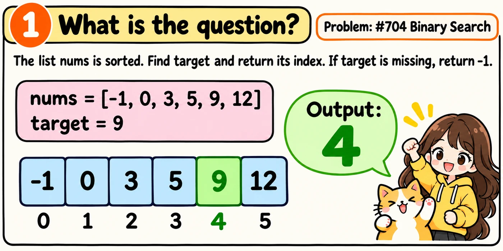
Checking each number is too slow.
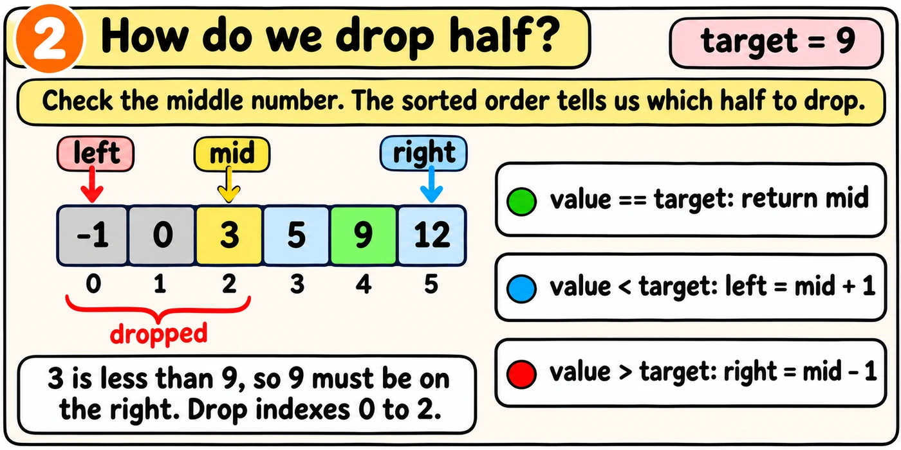
Let's watch the code find 5. Press Next for each step.
def search(nums, target): left = 0 right = len(nums) - 1 while left <= right: mid = (left + right) // 2 value = nums[mid] if value == target: return mid elif value < target: # target is to the right left = mid + 1 else: right = mid - 1 return -1
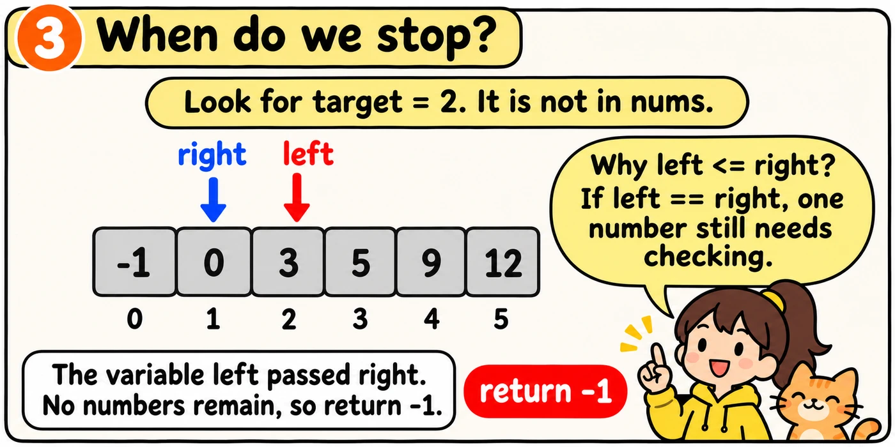
Every lesson uses this loop shape. Later lessons only change what each check means.
Tap Build it to see how I would write and explain this in an interview.
The one idea to remember
Write the whole function from memory. The comments explain each job, and a failed test gives a hint, not the answer.
The rest of the code is already written. Fill in the two gaps, starting each one at the left edge.
def search(nums, target): left = 0 right = len(nums) - 1
return -1
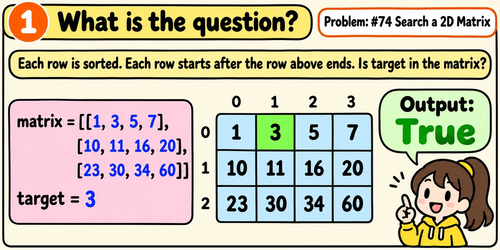
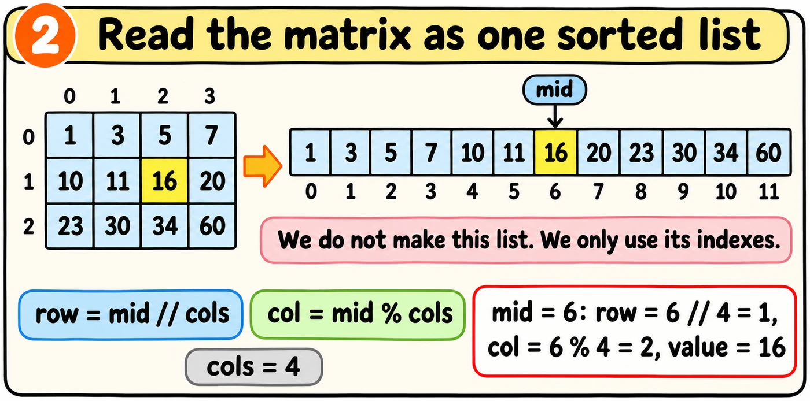
We use the same loop as Binary Search. The search range is 0 to rows * cols - 1.
Tap Build it to see how I would write and explain this in an interview.
The one idea to remember
Write the whole function from memory. The comments explain each job, and a failed test gives a hint, not the answer.
The rest of the code is already written. Fill in the two gaps, starting each one at the left edge.
def searchMatrix(matrix, target): rows = len(matrix) cols = len(matrix[0])
while left <= right: mid = (left + right) // 2
if value == target: return True elif value < target: left = mid + 1 else: right = mid - 1 return False
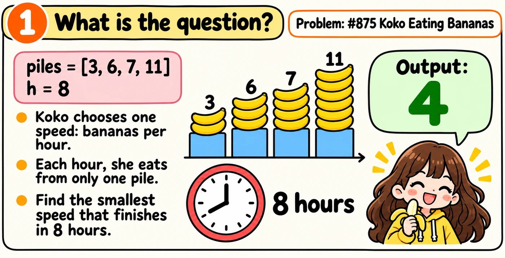
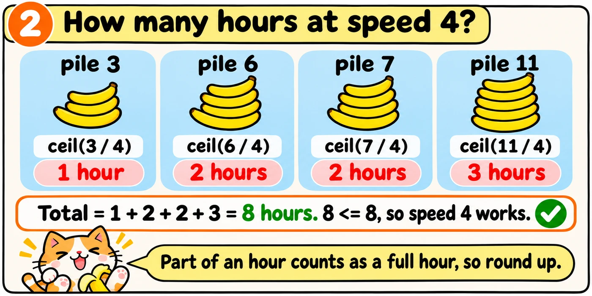
We use math.ceil because part of an hour counts as a full hour.
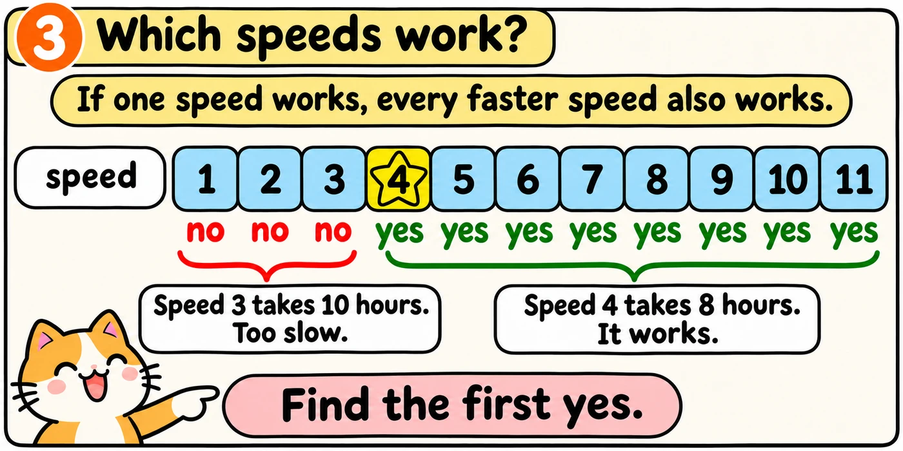
We search speeds from 1 to max(piles). Each mid is a speed to try.
One thing changes from Binary Search. A working speed is a yes, but we cannot stop there. We save it in best and look left, because a slower speed may also work.
Let's watch the search. Press Next for each step.
import mathdef minEatingSpeed(piles, h): left = 1 right = max(piles) best = right while left <= right: mid = (left + right) // 2 hours = 0 for pile in piles: needed = math.ceil(pile / mid) hours += needed if hours <= h: # mid works, so try slower best = mid right = mid - 1 else: left = mid + 1 return best
Tap Build it to see how I would write and explain this in an interview.
The one idea to remember
Write the whole function from memory. The comments explain each job, and a failed test gives a hint, not the answer.
The rest of the code is already written. Fill in the two gaps, starting each one at the left edge.
import mathdef minEatingSpeed(piles, h): left = 1 right = max(piles) best = right while left <= right: mid = (left + right) // 2
return best
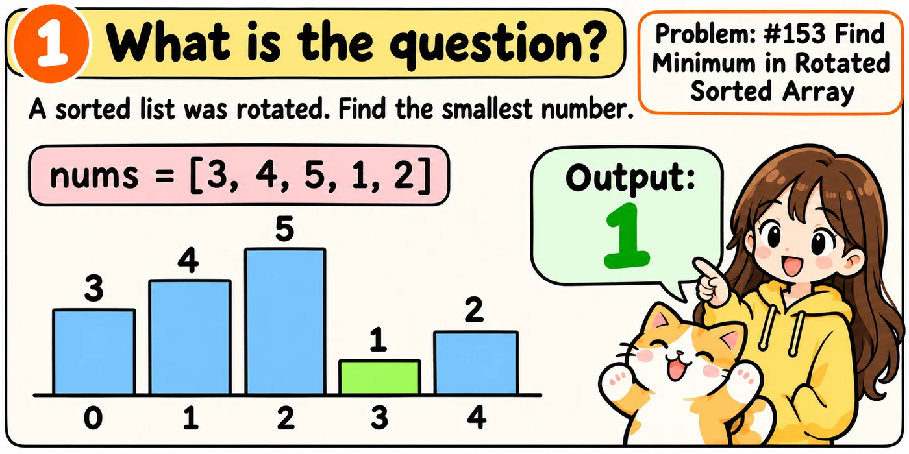
A rotated list was cut into two pieces. The pieces changed places. So [1, 2, 3, 4, 5] became [3, 4, 5, 1, 2].
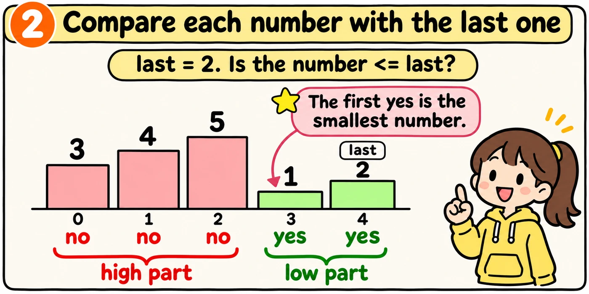
We find the first yes. For value <= last, we save value in best and look left. Otherwise, we look right.
The variable last is 2, and mid holds 5. Where is the smallest number?
The list was not rotated, like [1, 2, 3]. What does the code return?
Tap Build it to see how I would write and explain this in an interview.
The one idea to remember
Write the whole function from memory. The comments explain each job, and a failed test gives a hint, not the answer.
The rest of the code is already written. Fill in the two gaps, starting each one at the left edge.
def findMin(nums):
left = 0 right = len(nums) - 1 best = last while left <= right: mid = (left + right) // 2 value = nums[mid]
return best
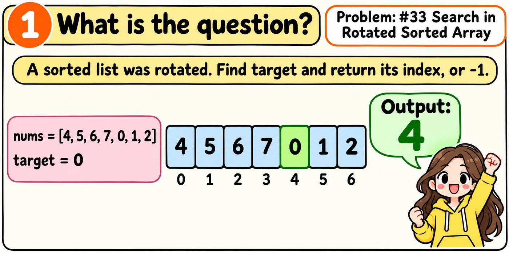
We search a rotated list. Comparing only value with target is not enough because the whole list is not sorted.
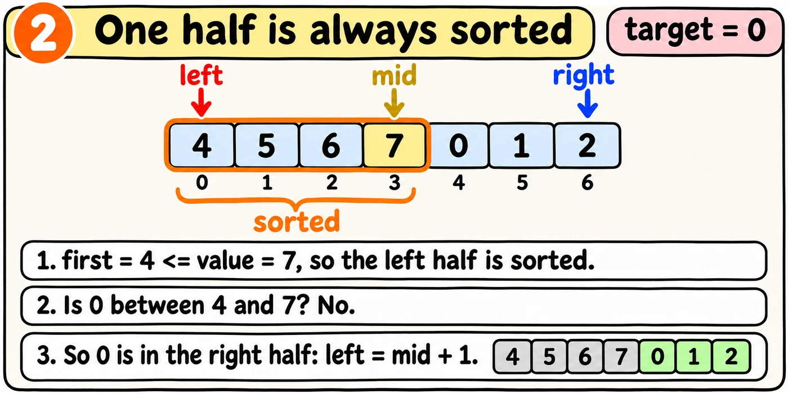
One half is always a sorted half. Its end values tell us if target is inside.
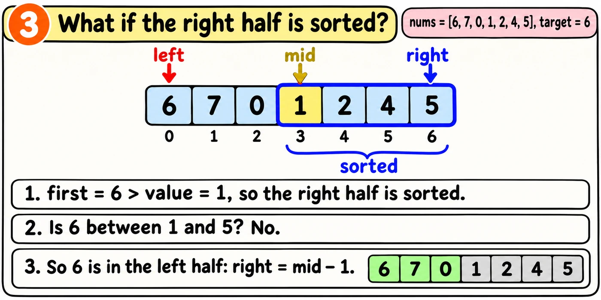
Let's watch the code find 0. Press Next for each step.
def search(nums, target): left = 0 right = len(nums) - 1 while left <= right: mid = (left + right) // 2 value = nums[mid] if value == target: return mid first = nums[left] last = nums[right] if first <= value: # the left half is sorted if first <= target < value: right = mid - 1 else: left = mid + 1 else: # the right half is sorted if value < target <= last: left = mid + 1 else: right = mid - 1 return -1
Tap Build it to see how I would write and explain this in an interview.
The one idea to remember
Write the whole function from memory. The comments explain each job, and a failed test gives a hint, not the answer.
The rest of the code is already written. Fill in the two gaps, starting each one at the left edge.
def search(nums, target): left = 0 right = len(nums) - 1 while left <= right: mid = (left + right) // 2 value = nums[mid] if value == target: return mid first = nums[left] last = nums[right]
return -1
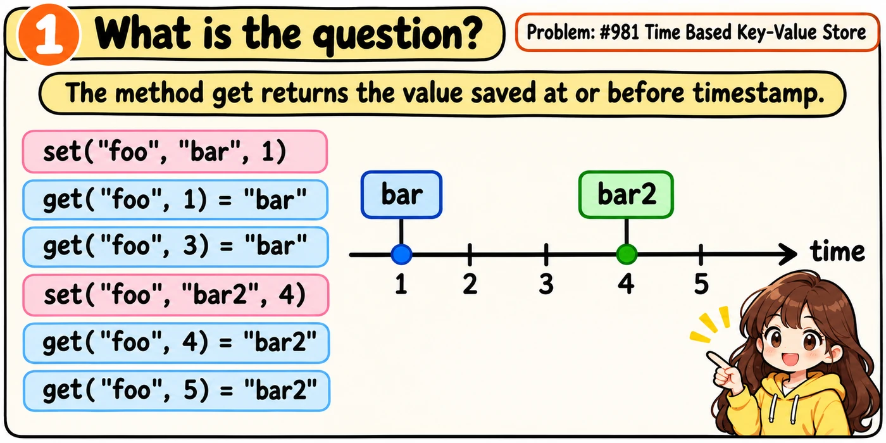
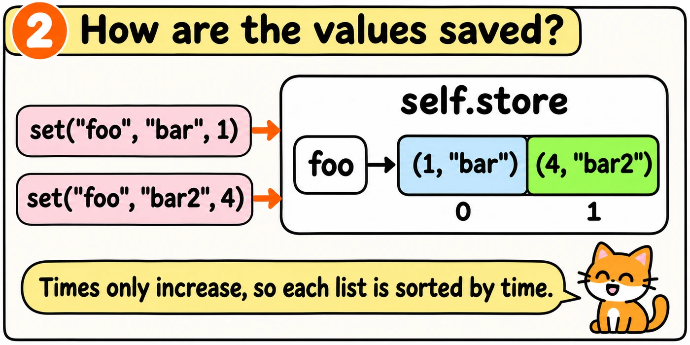
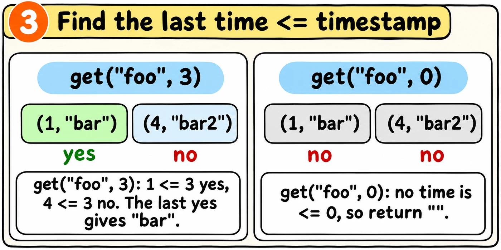
For a time that fits, we save its value in best and look right for a later yes.
The list for "foo" is [(1, "bar"), (4, "bar2")]. What does get("foo", 5) return?
Tap Build it to see how I would write and explain this in an interview.
The one idea to remember
Write the whole class from memory. The comments explain each job, and a failed test gives a hint, not the answer.
The rest of the code is already written. Fill in the two gaps, starting each one at the left edge.
class TimeMap: def __init__(self): self.store = {} def set(self, key, value, timestamp):
def get(self, key, timestamp): if key not in self.store: return "" pairs = self.store[key] left = 0 right = len(pairs) - 1 best = "" while left <= right: mid = (left + right) // 2 time = pairs[mid][0]
return best
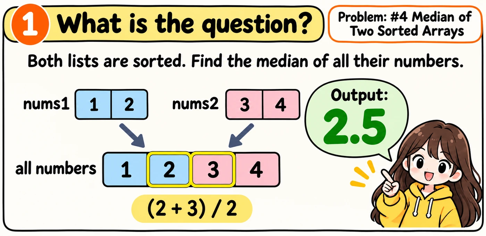
The median is the middle number in sorted order. For an even count, it is the average of the two middle numbers. Merging works, but it is too slow.
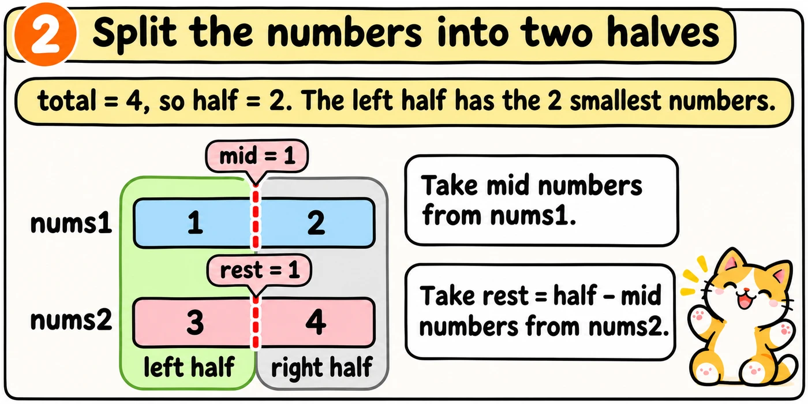
The median sits next to the correct cut.
We search mid from 0 to len(nums1). We make nums1 the shorter list, so rest never goes below 0.
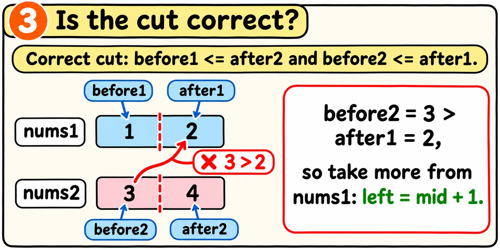
We only check numbers next to the cuts. If before1 > after2, move the cut left. If before2 > after1, move it right.
The variable before1 is 8 and after2 is 5. What should the search do?
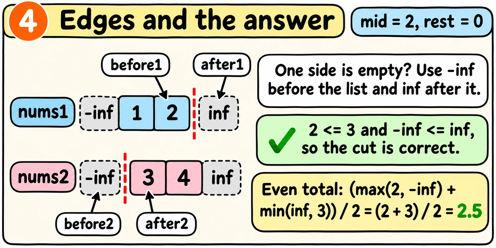
Infinity is bigger than every normal number. Minus infinity is smaller. In Python, float('inf') is infinity and float('-inf') is minus infinity. We store them in high and low, so edge cuts still pass the checks.
At the correct cut, max(before1, before2) is the biggest left number. For an odd total, it is the median. For an even total, we average it with the smallest right number.
The total is 5, and the cut is correct. Where is the median?
Tap Build it to see how I would write and explain this in an interview.
The one idea to remember
Write the whole function from memory. The comments explain each job, and a failed test gives a hint, not the answer.
The rest of the code is already written. Fill in the two gaps, starting each one at the left edge.
def findMedianSortedArrays(nums1, nums2): if len(nums1) > len( nums1, nums2 = nums2, nums1nums2):
low = float('-inf') high = float('inf') left = 0 right = len(nums1) while left <= right: mid = (left + right) // 2 rest = half - mid before1 = low if mid > 0: before1 = nums1[mid - 1] after1 = high if mid < len(nums1): after1 = nums1[mid] before2 = low if rest > 0: before2 = nums2[rest - 1] after2 = high if rest < len(nums2): after2 = nums2[rest]